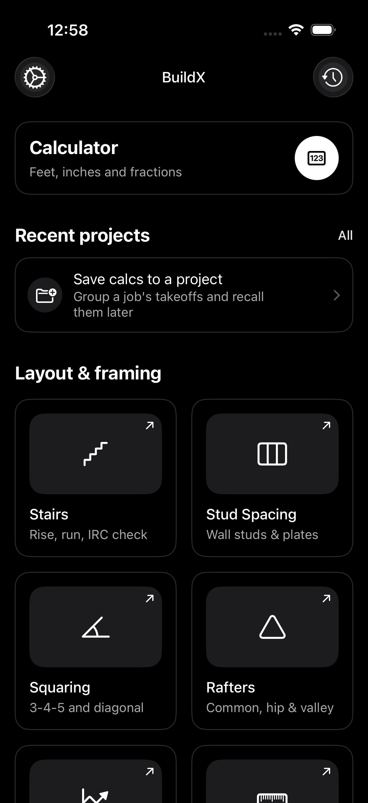
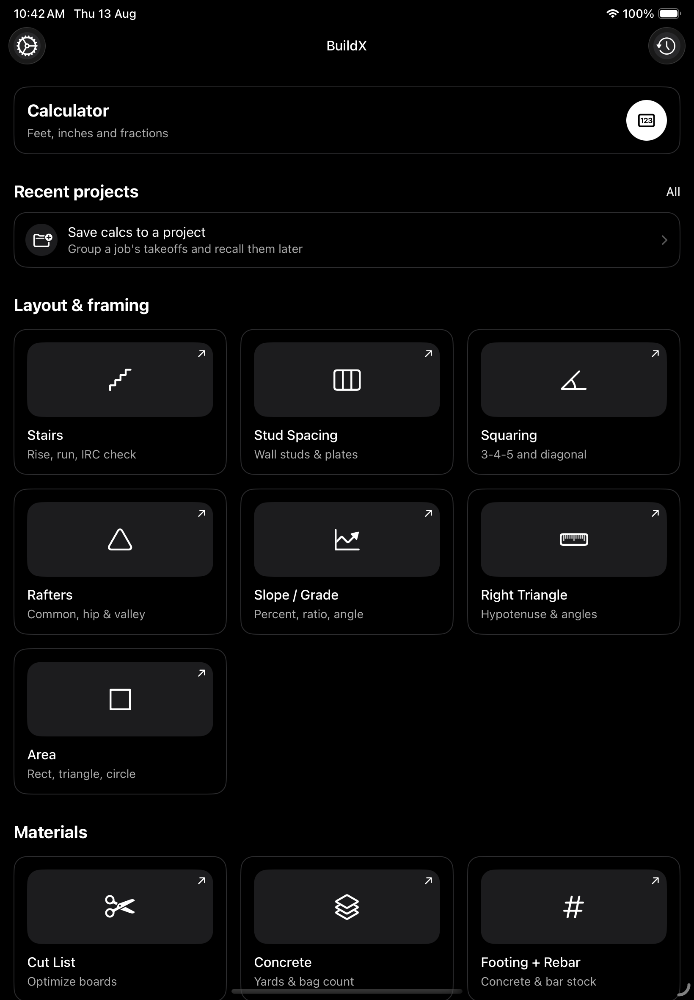

Exact calculator
Native fractional arithmetic with a reusable tape, memory, and answer recall.
Construction calculator
Exact feet, inches, and fractions—plus practical trade tools that turn field questions into dependable answers.
iPhoneFractions, feet & inchesField-ready tools


Made for the field
BuildX respects the notation people use on site and keeps specialist tools close without turning the app into a cluttered catalogue.
Native fractional arithmetic with a reusable tape, memory, and answer recall.
Stairs, rafters, right triangles, and area tools for real planning decisions.
Concrete, drywall, board feet, and baluster calculations with clear assumptions.